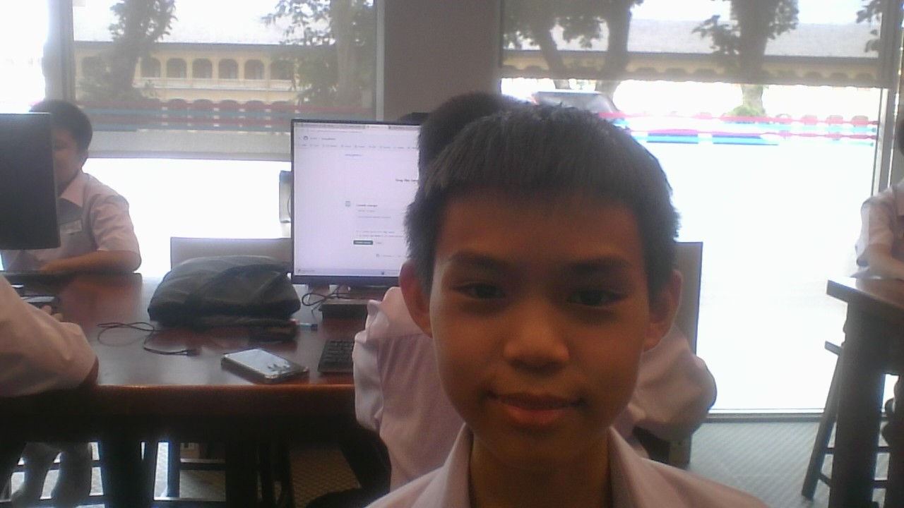

👉ตารางเรียนห้อง 102 🐘โรงเรียนสวนกุหลาบวิทยาลัย
| คาบ/วัน |
วันจันทร์ |
วันอังคาร |
วันพุธ |
วันพฤหัสบดี |
วันศุกร์ |
| คาบที่ 1 |
ภาษาอังกฤษ |
ประวัติศาสตร์ |
คณิตศาสตร์เพิ่มเติม |
IS |
ภาษาอังกฤษ |
| คาบที่ 2 |
ภูมิศาสตร์ |
คณิตศาสตร์พื้นฐาน |
ภาษาจีน |
IS | คณิตศาสตร์พื้นฐาน
| คาบที่ 3 |
คณิตศาสตร์พื้นฐาน |
ภูมิศาสตร์ |
ภาษาจีน |
เคมี |
ภาษาไทย |
| คาบที่ 4 |
พักกลางวัน |
พักกลางวัน |
พักกลางวัน |
เคมี |
พักกลางวัน |
| คาบที่ 5 |
สุขศึกษา |
ภาษาอังกฤษ |
ชีวะ |
พักกลางวัน |
ศิลปะ |
| คาบที่ 6 |
อังกฤษสร้างสรรค์ |
คณิตศาสตร์เพิ่มเติม |
ชีวะ |
พระพุทธศาสนา |
อังกฤษสร้างสรรค์ |
| คาบที่ 7 |
ว่ายน้ำ |
ลูกเสือ |
เเนะเเนว |
อังกฤษสร้างสรรค์ |
โลกเเละบรรยากาศ |
| คาบที่ 8 |
ภาษาไทย |
ประชุม |
คอมพิวเตอร์ |
คณิตศาสตร์เพิ่มเติม |
โลกเเละบรรยากาศ |

ด.ช.กิตติธัชช์ พึ่งวัฒนาพงศ์ ม.102 เลขที่ 35